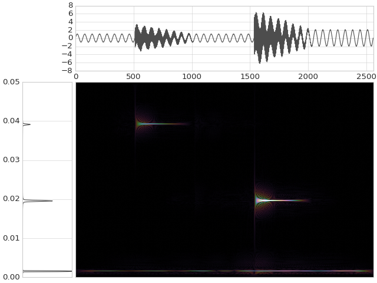

mtspec.wigner_ville_spectrum¶
-
mtspec.multitaper.wigner_ville_spectrum(data, delta, time_bandwidth=3.5, number_of_tapers=None, smoothing_filter=None, filter_width=100, frequency_divider=1, verbose=False)[source]¶ Function to calculate the Wigner-Ville Distribution or Wigner-Ville Spectrum of a signal using multitaper spectral estimates.
In general it gives better temporal and frequency resolution than a spectrogram but introduces many artifacts and possibly negative values which are not physical. This can be alleviated a bit by applying a smoothing kernel which is also known as a reduced interference distribution (RID).
Wraps the
wv_spec()andwv_spec_to_array()subroutines of the Fortran library.It is very slow for large arrays so try with a small one (< 5000 samples) first.
Parameters: - data (numpy.ndarray) – The input signal.
- delta (float) – The sampling interval of the data.
- time_bandwidth (float) – Time bandwidth product for the tapers.
- number_of_tapers (int) – Number of tapers to use. If
None, the number will be automatically determined from the time bandwidth product which is usually the optimal choice. - smoothing_filter (str) – One of
"boxcar","gauss"or justNone - filter_width (int) – Filter width in samples.
- frequency_divider (int) – This method will always calculate all frequencies from 0 ... Nyquist frequency. This parameter allows the adjustment of the maximum frequency, so that the frequencies range from 0 .. Nyquist frequency / int(frequency_divider).
- verbose (bool) – Verbose output on/off.
Example
This example demonstrates how to plot a signal, its multitaper spectral estimate, and its Wigner-Ville time-frequency distribution. The signal is sinusoidal overlaid with two simple linear chirps.
>>> import matplotlib.pyplot as plt >>> import numpy as np >>> from mtspec import mtspec, wigner_ville_spectrum >>> from mtspec.util import signal_bursts >>> fig = plt.figure()
Get the example signal.
>>> data = signal_bursts()
Plot the data on the top axes.
>>> ax1 = fig.add_axes([0.2,0.75, 0.79, 0.23]) >>> ax1.plot(data, color="0.1") >>> ax1.set_xlim(0, len(data))
Plot its spectral estimate on the side.
>>> ax2 = fig.add_axes([0.06,0.02,0.13,0.69]) >>> spec, freq = mtspec(data, 10, 3.5) >>> ax2.plot(spec, freq, color="0.1") >>> ax2.set_xlim(0, spec.max()) >>> ax2.set_ylim(freq[0], freq[-1]) >>> ax2.set_xticks([])
Create and plot the Wigner-Ville distribution.
>>> wv = wigner_ville_spectrum(data, 10, 3.5, ... smoothing_filter='gauss') >>> ax3 = fig.add_axes([0.2, 0.02, 0.79, 0.69]) >>> ax3.set_yticks([]) >>> ax3.set_xticks([]) >>> # The square root only serves plotting purposes. >>> ax3.imshow(np.sqrt(abs(wv)), interpolation='lanczos', ... aspect='auto', cmap="magma")
(Source code, png, hires.png, pdf)


{kind=link}
{kind=link}